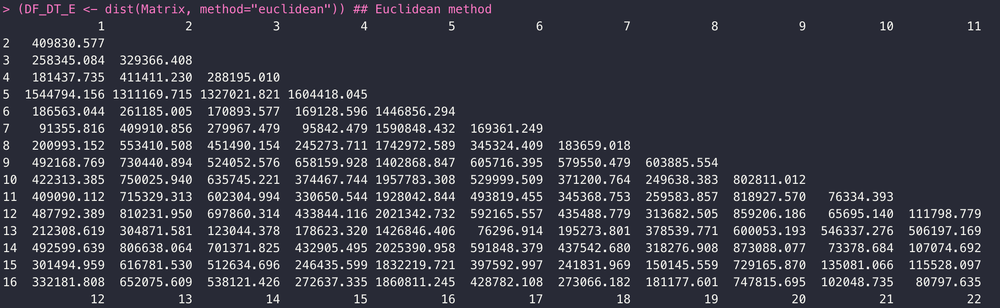
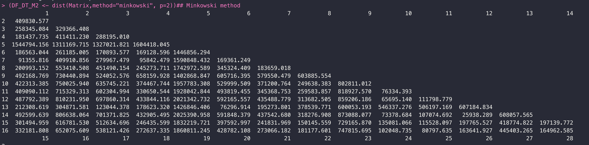
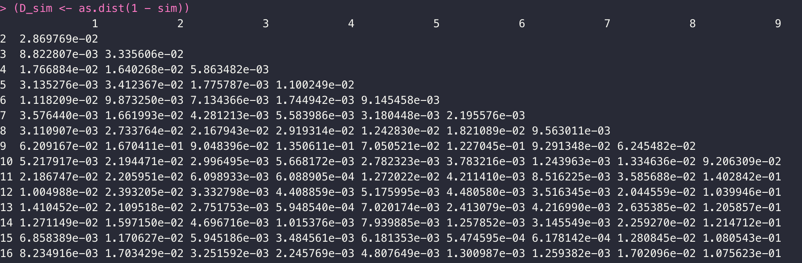
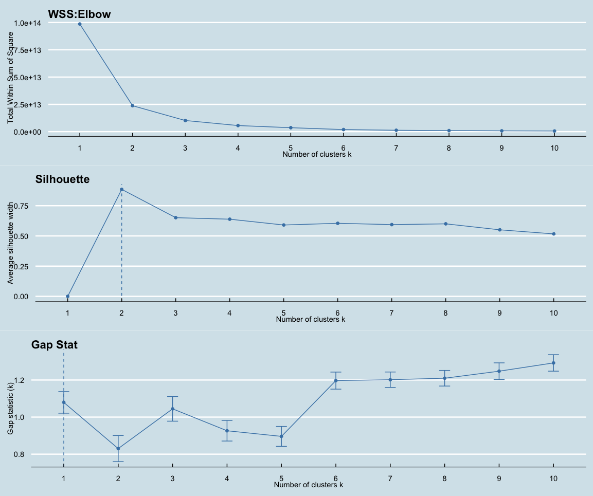
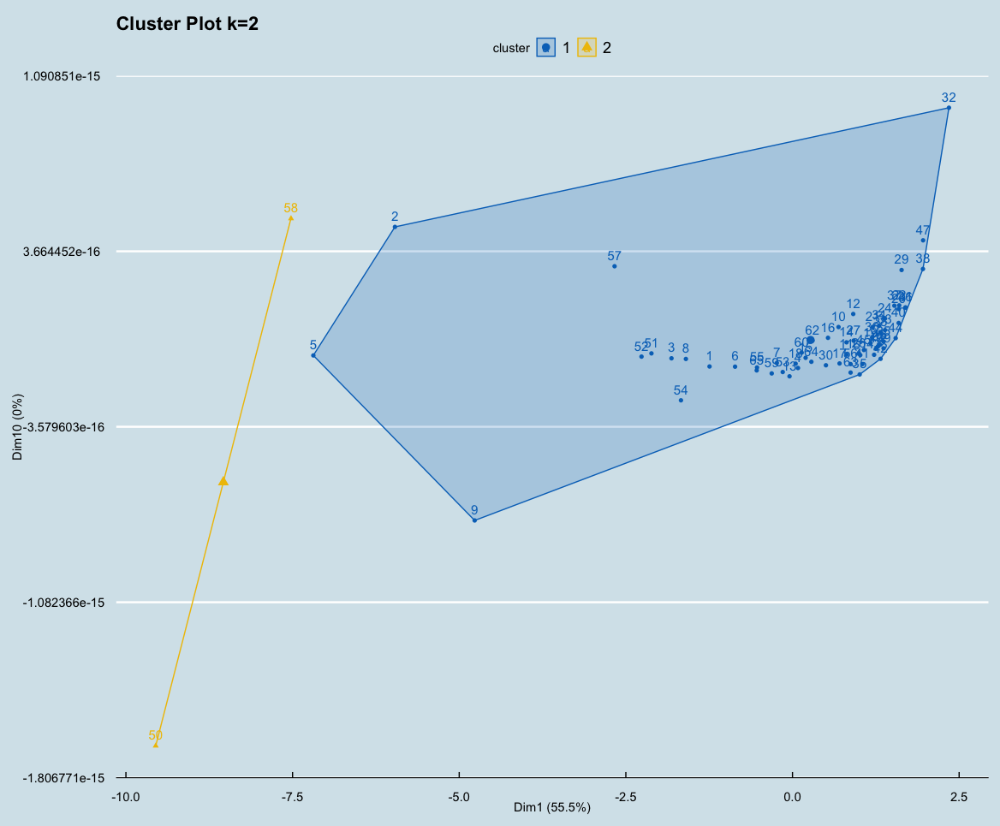
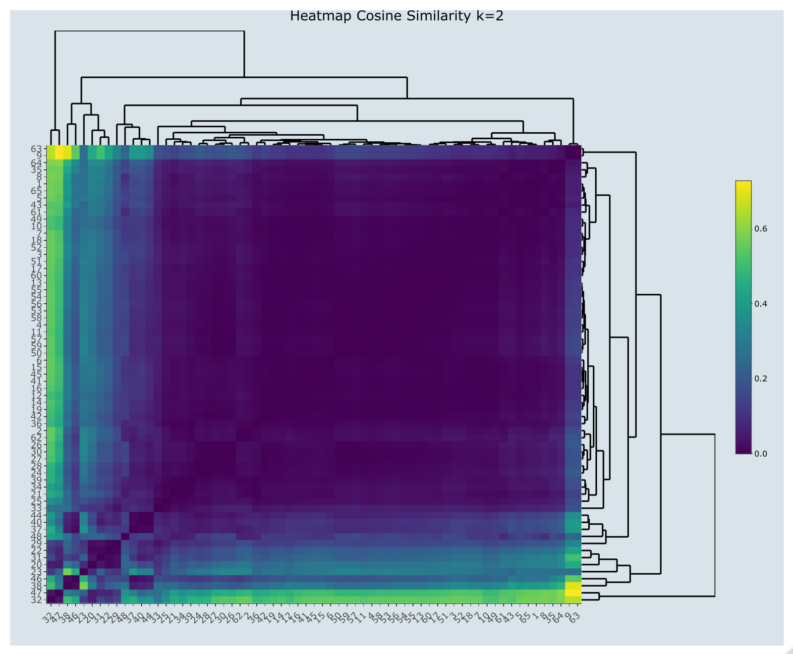
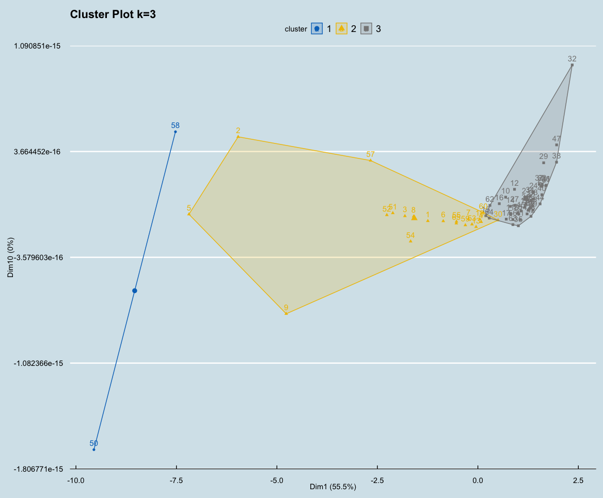
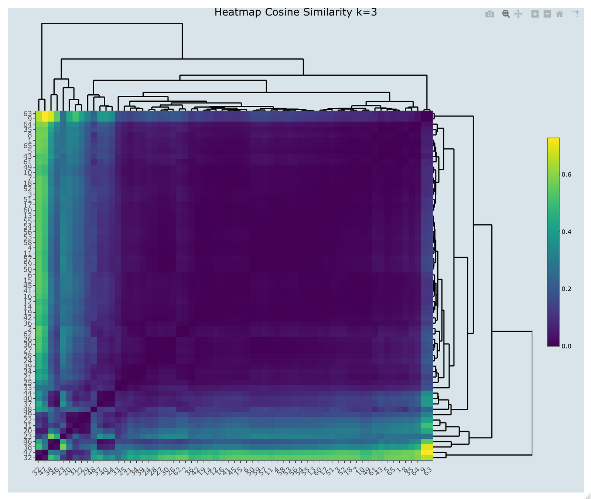
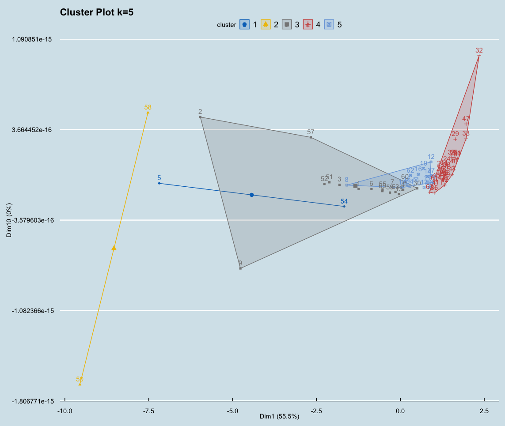
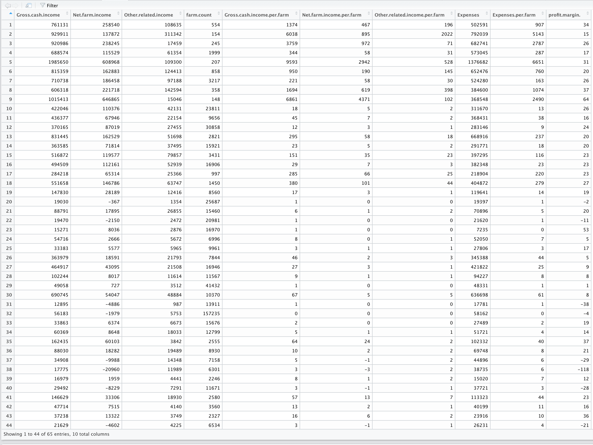

Clustering - Record Data (R)
This page will go through the process of clustering record data gathered from ERS website. In the previous page, the code gathered the financial statement of diary, cattle, wheat, coconet-peanut-tobacco(abbreviated as CPT from now on), all other livestock, and corn farms among the surveyed states in 2019 fiscal year. The code also gathered the farm number within each production category among each surveyed state.
In the data cleaning page, it shows how the raw data is being cleaned and saved as .csv files, so in this section, the main focus is to cluster the cleaned record data using R Studio.
Below is the screenshot of the record data before clustering.
Here is the full code of clustering
(download)
:
Here is the full code of clustering (download)











